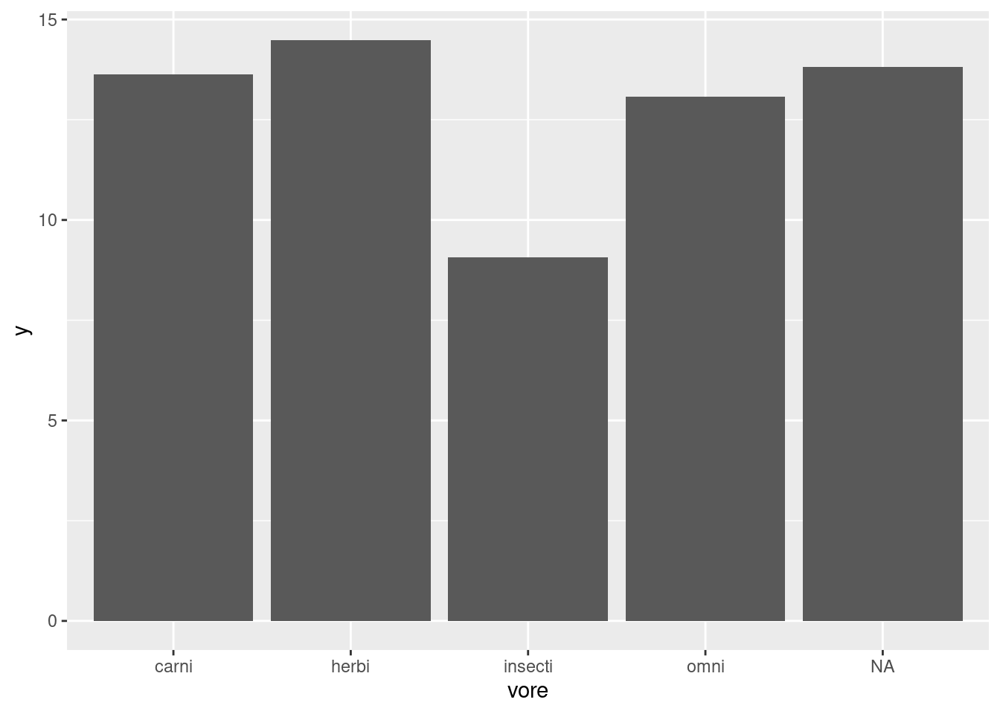
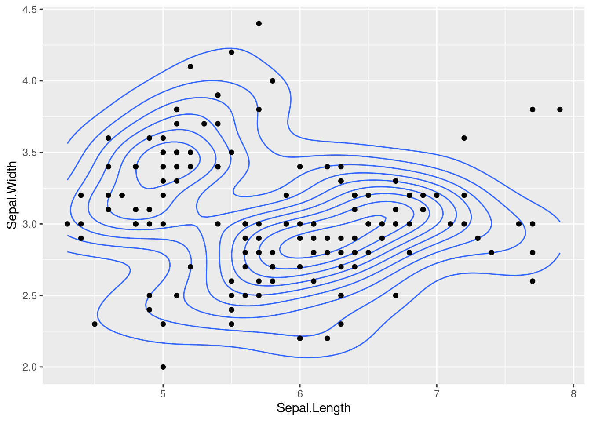
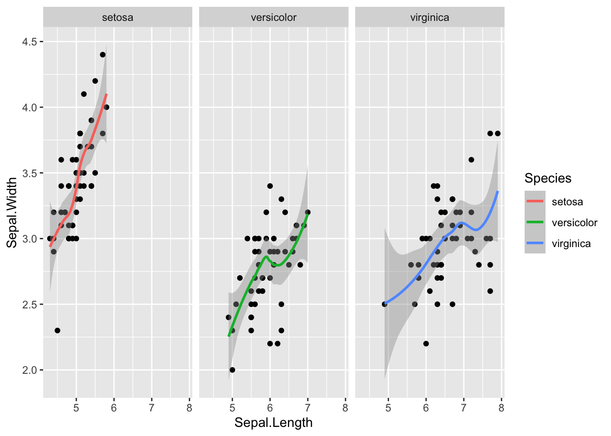

3.5 Making scientific figures
Making plots can be a great way to develop an intuition for your dataset, though to derive and communicate scientific insights, we need to have an idea of the uncertainty in our interpretations.
Uncertainty describes ideas such as: are the values between two groups different enough, that it is unlikely that the differences are due to chance? Is the correlation between these variables strong enough that one can predict the other, with some level of confidence? How statistically significant are the patterns we see?
3.5.1 Plotting error bars
When we compare measurements taken from two samples (i.e. two groups), we might want to see if the two groups have very different values for that specific measurement. If we have multiple observations within each group, we can take a summary statistic such as the mean or median and plot those against each other.

For example, here we have asked our geom_bar function to plot a summary, specifically the mean of each group, instead of plotting identity which usually means the value as is. Looking at this figure, we can’t guess if the groups are significantly different without an idea of the uncertainty in our measurements through something like error bars.
Here is the convention for plotting error bars in ggplot2, as you can see it is just another kind of geom that we can add to our plot:
ggplot(data = <SUMMARY DATA>, mapping = aes(<SUMMARY MAPPINGS>) + geom_bar(stat = "identity") + geom_errorbar(aes(<ERROR MAPPINGS>))
This method is straightforward, but you need to have pre-calculated the summary statistic for each group and the amount of error (i.e. standard error) from your data. That “aggregated” dataframe becomes the data that you provide to ggplot, instead of the original dataset.
## `summarise()` ungrouping output (override with `.groups` argument)## # A tibble: 5 x 4
## vore y ymin ymax
## <chr> <dbl> <dbl> <dbl>
## 1 carni 13.6 12.6 14.7
## 2 herbi 14.5 13.6 15.4
## 3 insecti 9.06 6.41 11.7
## 4 omni 13.1 12.4 13.7
## 5 <NA> 13.8 12.7 14.9What does mean_se do? ?mean_se y is the mean ymin is mean - one SE ymax is mean + one SE

Here we create the same plot as before from this aggregated dataset, just showing the mean value in each group.
ggplot(feeding.data, aes(x = vore, y = y)) +
geom_bar(stat = "identity") +
geom_errorbar(aes(ymin = ymin, ymax = ymax),
width = 0.2)
Now we add the error bars, mapping the ymin and ymax values to show where the bottom and top of each error bar should be.
3.5.2 Showing trends in data
Lots of these different figures summarize or aggregate the data. We may want to display the data with the individual points, but still show the overall trend across the data.
msleep3 <- msleep2 %>% mutate(bodywt_log = log(bodywt))
ggplot(data = msleep3, mapping = aes(x = brainwt_log, y = bodywt_log)) +
geom_density_2d() +
geom_point()
ggplot(data = iris, mapping = aes(x = Sepal.Length, y = Sepal.Width)) +
geom_density_2d() +
geom_point()
We can add a trendline with geom_smooth that you can check using help(geom_smooth).
my.plot <- ggplot(msleep3, aes(x = brainwt_log, y = bodywt_log)) +
geom_point(alpha = 0.5) +
geom_smooth()
my.plot## `geom_smooth()` using method = 'loess' and formula 'y ~ x'
We can also do this with trendlines that summarize only certain subsets of the data, such as ?
ggplot(data = iris, mapping = aes(x = Sepal.Length, y = Sepal.Width)) +
geom_point() +
geom_smooth(aes(color = Species)) ## `geom_smooth()` using method = 'loess' and formula 'y ~ x'
The above plot reflects the trends, but makes it hard to see the data that is contributing to each trend line. These differences can be most easily seen using facet_wrap or facetting that splits the figure into separate panel where the data has been filtered by the category (i.e. ?).
ggplot(data = iris, mapping = aes(x = Sepal.Length, y = Sepal.Width)) +
geom_point() +
geom_smooth(aes(color = Species)) +
facet_wrap( ~ Species)## `geom_smooth()` using method = 'loess' and formula 'y ~ x'
3.5.3 Saving figures locally
As you produce analysis in your research, you may want to create high-quality images of your figures to then use in presentations or publications. There are two easy ways to save images as an individual file on your computer,
The first method uses ggsave to save the most recent ggplot figure you generated.
ggplot(msleep2, aes(x = brainwt_log, y = sleep_rem)) + geom_point() +
geom_smooth(method = "lm")
ggsave("plot.png", width = 5, height = 5)This function will save wherever your directory is currently. Check with getwd() and change with setwd(folder name). You can also provide a precise file path in the new file name.
Here is an alternative method for saving your figures:
pdf("plot.pdf") # creates the file
# png() also works if you want a different file format
ggplot(msleep2, aes(x = brainwt_log, y = sleep_rem)) + geom_point() +
geom_smooth(method = "lm")
dev.off() # finishes editing the fileAny changes to the figure that are contained between the initial creation of the figure (i.e. the pdf command) and the dev.off command will be included in the final saved image. However, the figure is being printed directly to the file it is writing and won’t appear elsewhere.
Licensed Creative Commons Attribution-NonCommercial-ShareAlike 4.0